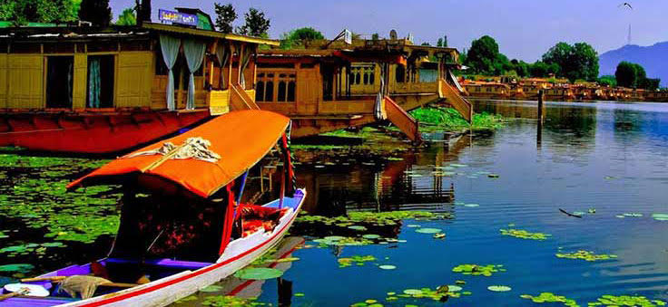
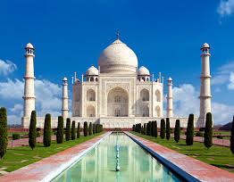

Gangatic region
 North India is a loosely defined region consisting of the northern part of India. The dominant geographical features of North India are the Indus-Gangetic Plain and the Himalayas, which demarcate the region from the Tibetan Plateau and Central Asia. The term North India has varying definitions—the Ministry of Home Affairs in its Northern Zonal Council Administrative division included the states of Haryana, Himachal Pradesh, Jammu and Kashmir, Punjab and Rajasthan and Union Territories of Delhi, Chandigarh.